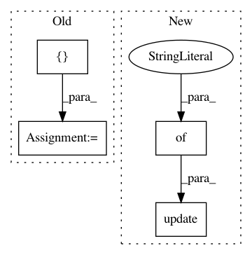

e2838611c1e3e1d8d36fb50eb6c0e3e4c172004a,softlearning/algorithms/sac.py,SAC,_init_actor_update,#SAC#,276
Before Change
"loss", "gradients", "gradient_norm", "global_gradient_norm"
] if self._tf_summaries else [])
self._training_ops += [policy_train_op, vf_train_op]
def _init_target_ops(self):
Create tensorflow operations for updating target value function.
After Change
"loss", "gradients", "gradient_norm", "global_gradient_norm"
] if self._tf_summaries else [])
self._training_ops.update({
"policy_train_op": policy_train_op,
"vf_train_op": vf_train_op,
})
def _init_target_ops(self):
Create tensorflow operations for updating target value function.
In pattern: SUPERPATTERN
Frequency: 3
Non-data size: 4
Instances
Project Name: rail-berkeley/softlearning
Commit Name: e2838611c1e3e1d8d36fb50eb6c0e3e4c172004a
Time: 2018-09-09
Author: kristian.hartikainen@gmail.com
File Name: softlearning/algorithms/sac.py
Class Name: SAC
Method Name: _init_actor_update
Project Name: rail-berkeley/softlearning
Commit Name: 4acfe337e4d638275e7099865c6ef2bc75ee50cc
Time: 2018-09-09
Author: kristian.hartikainen@gmail.com
File Name: softlearning/algorithms/sac.py
Class Name: SAC
Method Name: _init_summary_ops
Project Name: rail-berkeley/softlearning
Commit Name: e2838611c1e3e1d8d36fb50eb6c0e3e4c172004a
Time: 2018-09-09
Author: kristian.hartikainen@gmail.com
File Name: softlearning/algorithms/sac.py
Class Name: SAC
Method Name: _init_critic_update